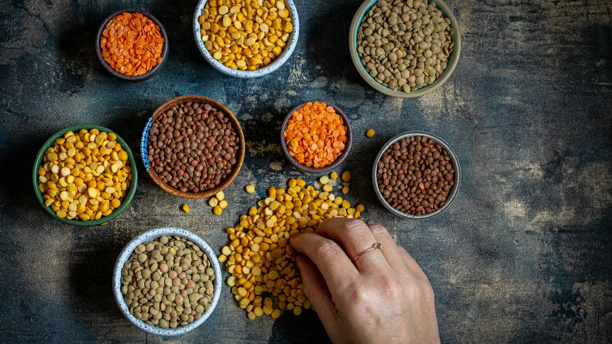

Blog
Nutrición fiable, explicada fácil
Artículos basados en la evidencia científica sobre salud digestiva, nutrición oncológica y alimentación del día a día. Para que tomes decisiones con criterio y sin dietas milagro.

Nutrición generalFerritina baja: los nuevos valores del hierro en mujeres
La nueva guía de hematología duplica el límite de ferritina para diagnosticar déficit de hierro. Qué significa para ti y cómo cuidar tu hierro desde el plato.
Leer artículo → DigestivoColon irritable: qué comer y cómo aliviar los síntomas
Dieta baja en FODMAP, el tipo de fibra que sí ayuda y los hábitos que alivian la hinchazón, según las guías clínicas actuales.
Leer artículo →Todavía no hay artículos en esta categoría. ¡Muy pronto!